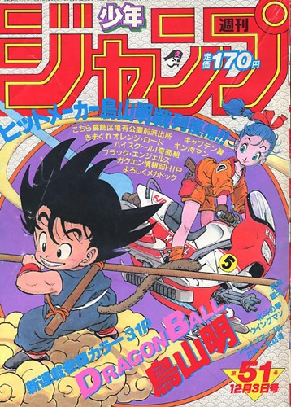

Dragon Ball
(ドラゴンボール) é uma franquia de mídia japonesa criada por Akira Toriyama. Originalmente iniciada com uma série de mangá escrita e ilustrada por Toriyama, foi serializada em capítulos na revista Weekly Shonen Jump de 1984 a 1995. Os 519 capítulos foram compilados em 42 volumes tankōbon e publicados pela editora Shueisha. Dragon Ball foi inicialmente inspirado pelo clássico romance chinês Jornada ao Oeste. A série segue as aventuras do protagonista, Son Goku, desde sua infância até a idade adulta enquanto ele treina artes marciais e explora o mundo em busca de sete esferas conhecidas como as Esferas do Dragão, que convocam um dragão que concede um desejo quando reunidas. Ao longo de sua jornada, Goku faz vários amigos e luta contra uma grande variedade de vilões, muitos dos quais também procuram as Esferas do Dragão.
O mangá Dragon Ball foi adaptado em duas séries de anime pela Toei Animation: Dragon Ball e Dragon Ball Z, que, juntas, foram transmitidas no Japão de 1986 a 1996. Além disso, o estúdio desenvolveu 20 longas-metragens animadas e três especiais de televisão, assim como duas séries de anime, intituladas Dragon Ball GT (1996–1997) e Dragon Ball Super (2015–2018). De 2009 a 2015, uma versão remake e acelerada de Dragon Ball Z foi exibida no Japão sob o título Dragon Ball Kai, na qual a maior parte das cenas da versão original que não aparecem no mangá foram removidas. Várias empresas desenvolveram diversas adaptações da série de mangá, tornando-a uma grande e popular franquia de mídia que inclui filmes animados e em live-action, jogos de cartas colecionáveis, inúmeras figuras de ação, além de várias coleções de trilhas sonoras e um grande número de jogos eletrônicos. A partir de novembro de 2014, a franquia gerou $5 bilhões em mercadorias, tornando Dragon Ball uma das franquias de mídia baseadas em mangá mais comercializadas de todos os tempos.
Desde o seu lançamento, Dragon Ball tornou-se uma das séries de mangá e anime mais bem sucedidas e importantes de todos os tempos. Os 42 volumes do mangá já venderam 240 milhões de cópias em todo o mundo, tornando-se uma das séries de mangá mais vendidas da história. Os críticos elogiaram a arte, os personagens e o humor da história. É amplamente considerado como uma das maiores séries de mangás já feitas, com muitos mangakás citando Dragon Ball como uma fonte de inspiração para suas obras. Os animes, especialmente Dragon Ball Z, também são altamente populares em vários países e foram indiscutivelmente uns dos mais influentes em impulsionar a popularidade da animação japonesa na cultura ocidental.
Enredo Voltar
A história de Dragon Ball começa com Son Goku, um garoto ingênuo e puro com cauda de macaco e uma força extraordinária. Ele mora sozinho após a morte de seu avô adotivo em uma montanha chamada Paozu. Um dia ele conhece Bulma, uma garota muito inteligente da cidade, que estava em busca das sete Esferas do Dragão. Persuadido, Goku concorda em ajudar Bulma a encontrar as Esferas. Os dois partem em uma longa jornada, durante a qual eles fazem muitos amigos. Depois, Goku passa por um treinamento com Kame-Sennin, onde o garoto Kuririn se torna seu parceiro, e participa de vários torneios mundiais de artes marciais. No curso de seu crescimento e seu desenvolvimento, ele enfrenta inúmeros inimigos, incluindo Piccolo, que depois se torna seu aliado. Quando jovem adulto, Goku se casa com Chi-Chi, cumprindo uma promessa feita por ele quando ambos eram crianças, e possui seu primeiro filho chamado Gohan. Goku acaba descobrindo que pertence à raça extraterrestre Saiyajin, e que foi enviado à Terra quando criança para conquistar o planeta. Pouco depois de sua chegada, no entanto, ele tinha sofrido um ferimento na cabeça, perdendo desta forma a memória da missão e sua natureza agressiva. No entanto, o jovem decide continuar a defender seu planeta adotado do ataque de inimigos cada vez mais difíceis, incluindo o príncipe dos sayajins Vegeta, que depois também se torna seu aliado. Desta forma, juntamente com sua família e seus amigos, Goku luta contra inimigos como Freeza, Cell, Boo, entre outros, se tornando o protetor da Terra e todo o universo.
Temática Voltar
Dragon Ball, basicamente, é sobre a luta entre o bem e o mal. A princípio alguns dos personagens pretendem reunir as sete Esferas do Dragão para pedir algum desejo pessoal, mas eles aprendem que estes objetos também são procurados por outros para o mal, que os leva a enfrentá-los em mais de uma ocasião. Mais tarde, eles aparecem mais poderosos do que os adversários anteriores, com objetivos como conquistar a Terra ou exterminar a humanidade; de modo que tem na trama vários elementos característicos da ficção científica. Goku e seus amigos representam o bem e tentam erradicar o mal com a ajuda das Esferas do Dragão e outros objetos mágicos, sem que a morte represente um último obstáculo para eles, já que podem reviver com a ajuda desses objetos.
Um dos valores é sobre amizade, uma vez que vários dos desejos que os protagonistas pediram ao juntar as esferas foram para reviver amigos que morreram. Além disso, Goku sempre vai ajudar os seus amigos quando eles estão em perigo. O protagonista oferece uma imagem de redenção e esperança
, assim como o crescimento pessoal, aumentando o seu poder significativamente à medida que a série continua: Goku luta para melhorar e desenvolver suas habilidades porque faz ele se sentir mais forte e mais feliz [...] Procurar inimigos mais fortes para se forçar a melhorar e provar que é melhor do que antes, não para ratificar a sua existência e invalidar os seus adversários
. Este último, é exemplificado nos diferentes momentos em que o personagem está animado para conhecer um inimigo desafiador ou quando, pouco antes de derrotar Majin Boo, ele diz, Majin Boo você é um ser incrível, eu te admiro muito por que deu o melhor de si. Passou por várias transformações, foi tão poderoso que todos odiamos você. Espero que renasça como uma boa pessoa, estarei te esperando para lutarmos. Eu também vou treinar, vou treinar bastante para ficar mais forte. Adeus Majin Boo.
Anime Voltar
Dragon Ball Voltar
Toei Animation produziu uma série de anime baseada nos primeiros 194 capítulos do mangá, também intitulada Dragon Ball. A série estreou no Japão na Fuji Television em 26 de fevereiro de 1986 e terminou em 12 de abril de 1989, com duração de 153 episódios.
Dragon Ball Z Voltar
Ao invés de continuar o anime como Dragon Ball, Toei Animation decidiu continuar com sua adaptação sob um novo nome e pediu a Akira Toriyama para chegar ao título. Ball Z (ドラゴンボールZ(ゼット Doragon Bōru Zetto?), frequentemente abreviado como DBZ, se passa cinco anos após o final da primeira série e adapta os últimos 325 capítulos do mangá. Começou no Japão na Fuji ATV em 26 de abril de 1989, assumindo o intervalo de tempo do seu antecessor, e durou 291 episódios até sua conclusão em 31 de janeiro de 1996.
Dragon Ball GT Voltar
Dragon Ball GT (ドラゴンボール GT Doragon Bōru Jī Tī?) estreou na Fuji TV em 2 de fevereiro de 1996 e terminou em 19 de novembro de 1997, com duração de 64 episódios. Ao contrário das duas primeiras séries de anime, ela não é baseada no mangá original de Akira Toriyama, sendo criada pela Toei Animation como uma continuação da série ou como Toriyama a chamou, uma "grande história paralela do Dragon Ball original." Toriyama desenhou os personagens principais, a nave espacial usada na série, o design de três planetas, e veio com o título e o logotipo. Além disso, Toriyama também supervisionou a produção da série, assim como ele tinha feito para os animes Dragon Ball e Dragon Ball Z.
Dragon Ball Kai Voltar
É uma remasterizaçao em HD de Dragon Ball Z, anunciado em fevereiro de 2009 pela Toei Animation. Kai significa revisão, nada mais sendo que uma nova versão editada para comemorar os 20 anos de Dragon Ball Z. A nova versão da série possui nova abertura e encerramento e as falas foram re-dubladas pelos atores originais. A versão Kai teve 99 episódios e apenas 98 foram transmitidos, devido ao acidente com tsunami no Japão. Em 2014, estreou a segunda parte do anime, focado na Saga de Majin Boo.
Dragon Ball Super Voltar
Em 28 de abril de 2015, Toei Animation anunciou Dragon Ball Super (ドラゴンボール超 Doragon Bōru Sūpā?), a primeira série de anime de Dragon Ball a ser lançada em 18 anos desde Dragon Ball GT. Ela estreou em 5 de julho de 2015 e é exibida como uma série semanal às 9:00 da manhã na Fuji TV aos domingos. Masako Nozawa reprisa seus papéis como Goku, Gohan e Goten. A maioria do elenco original reprisam seus papéis também. Kouichi Yamadera e Masakazu Morita também reprisam seus papéis, como Bills e Whis, respectivamente. A história do anime é definida quatro anos após a derrota de Majin Boo, quando a Terra tornou-se pacífica mais uma vez. Akira Toriyama é o criador da série, e também é creditado por história original e conceitos de design de personagens
.
Super Dragon Ball Heroes Voltar
Em maio de 2018, a Yonkou Productions anunciou o anime Super Dragon Ball Heroes, baseado no jogo de mesmo nome publicado pela Bandai Namco.
Mangá Voltar
 Escrito e ilustrado por Akira Toriyama, Dragon Ball foi serializado na antologia de mangá Weekly Shonen Jump de 20 de novembro de 1984 a 23 de maio de 1995, quando Toriyama ficou exausto e sentiu que precisava de uma pausa do desenho. Os 519 capítulos individuais foram publicados em 42 volumes tankōbon pela Shueisha de 10 de setembro de 1985 a 4 de agosto de 1995. Entre 4 de dezembro de 2002 e 2 de abril de 2004, os capítulos foram relançados em uma coleção de 34 volumes kanzenban, que incluiu um final ligeiramente reescrito, novas capas, e arte coloridas de sua publicação na Weekly Shōnen Jump. A edição de fevereiro de 2013 da V Jump, que foi lançada em dezembro de 2012, anunciou que partes do mangá serão totalmente coloridas e relançadas em 2013. Vinte volumes, começando pelo capítulo 195 e agrupados por arcos de história, foram lançados entre 4 de fevereiro de 2013 e 4 de julho de 2014. Doze volumes, cobrindo os primeiros 194 capítulos, foram publicados entre 4 de janeiro e 4 de março de 2016. Uma edição sōshūhen que visa recriar o mangá como ele foi originalmente serializado na Weekly Shonen Jump com páginas a cores, texto promocional e previsões do próximo capítulo, começou a ser publicado em 13 de maio de 2016.